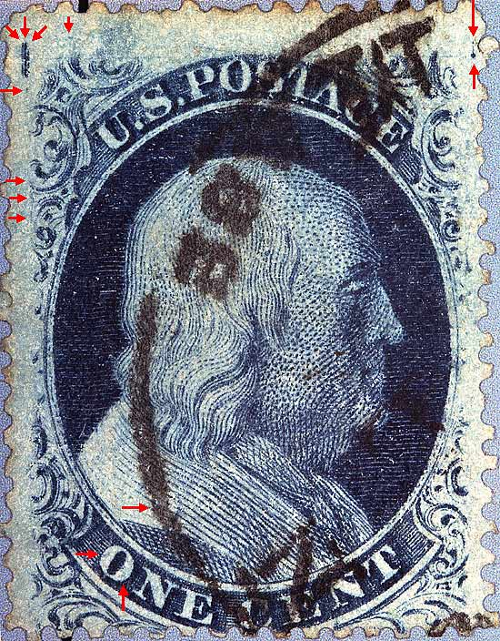
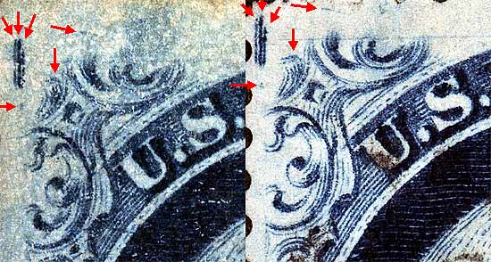
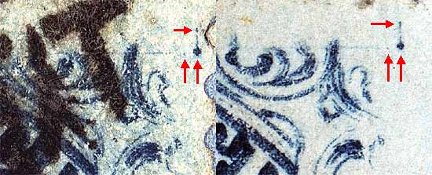
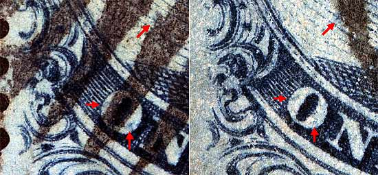

1¢ Franklin Issue of 1857-1861, PLATE 8 Pos 10R8, (Scott #24) |
| Scott #24 Blue, Type V, Relief A Issued only Perforate. DOUBLE TRANSFER Unlike Plates 5 and 7, neither of which produced any double transfers, Plate 8 had two such varieties, Positions 8R8 and 10R8, both occurring in the top row of the right pane. These two double transfers prove that the two small vertical scribe lines at the NW corner were part of and on the "A" relief part of the relief transfer roller because the double transfers of both positions are shown in the doubling of the small vertical lines as well as the stamp design itself. Stamps from Positions 4R8 thru 10R8 also show a heavy dot on the shoulder above the "N" of ONE. This dot occurs in the same place on these seven positions and readily identifies such stamps as coming from the right pane of Plate 8. On this copy it is obscured by cancellation ink. |
|  |
| FIGURE 1. (Below) Three vertical scribe lines and unnamed ornament between ornaments A and S show the double transfer very clearly.
 |
| FIGURE 2. (Below) Guide dot with vertical scribe line as shown in Neinken plating diagrams.
 |
| FIGURE 3. (Below) Blurry splotches of color in the "O" of ONE, which is not shown in the plating diagrams but appears consistent.
 |
DISCLAIMER and COPYRIGHT INFORMATION: Thanks for visiting this site. I hope you learn something new as we are making new discoveries all the time. You, the visitor, have my permission to link to my pages and to share the INFORMATION with others. The images themselves fall under the fair use guidelines established by the United States Congress and Copyright law. Basically contact us before using. I also ask in return that you send me an e-mail if I have made a mistake, or have made some other technical blunder that in my rush to put these pages up would cause the visitor confusion. Please also visit my other website at www.slingshotvenus.com. and support the live music arts. While your there, be sure to purchase our music. There are not many philatelic rock stars around and we need all the help we can get. :-) I can be reached at: nerdman@ix.netcom.com Update 12/18/07 |